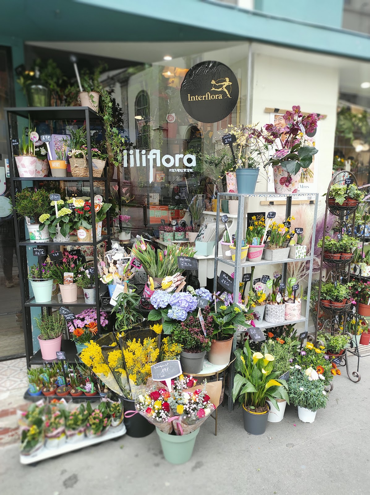
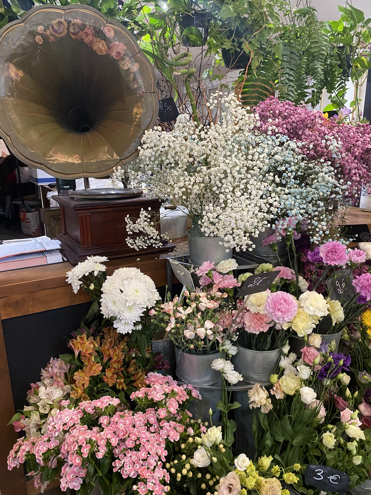
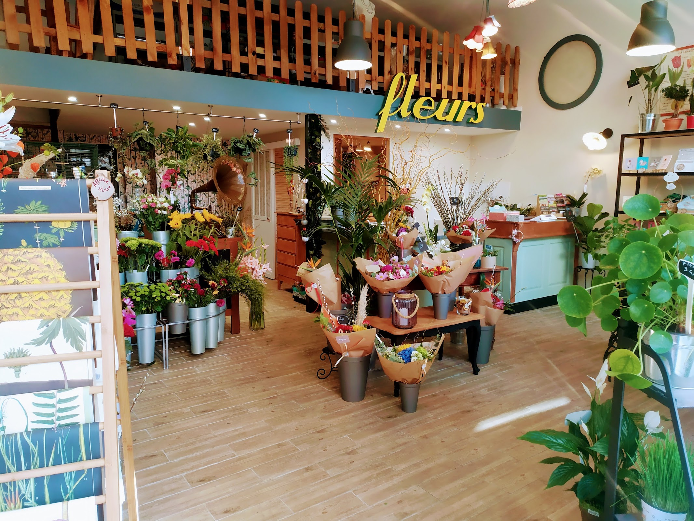

Des vitrines qui changent
Des vitrines à thème qui changent au fil des saisons et donnent une nouvelle atmosphère à la boutique.

Vitrines · compositions · inspirations
Compositions, vitrines et idées florales : la créativité de Lili Flora s’exprime au fil des saisons.
Des vitrines à thème qui changent au fil des saisons et donnent une nouvelle atmosphère à la boutique.
La créativité se retrouve dans la manière d’associer fleurs, plantes, objets et couleurs.
Les créations et les arrivages évoluent régulièrement, avec de nouvelles associations à découvrir en boutique.
Quelques images de l’univers créatif de Lili Flora.


Lili Flora — 119 Grande Rue de la Guillotière